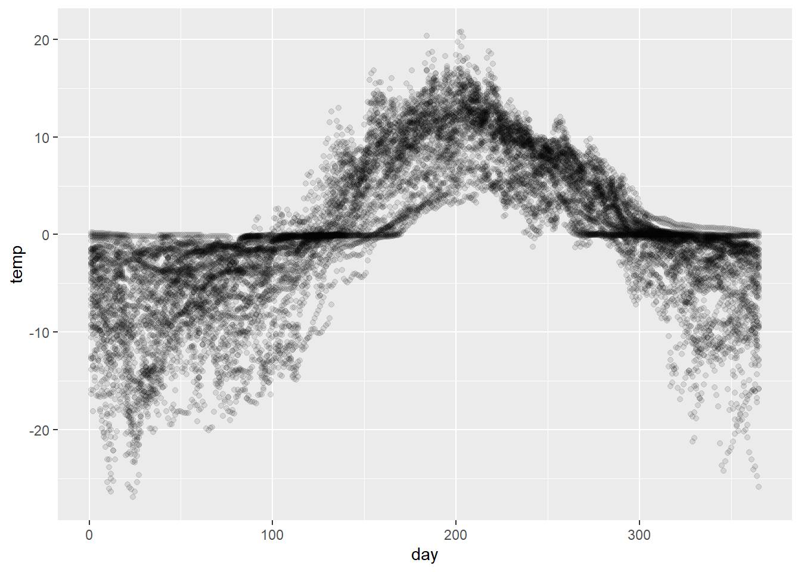
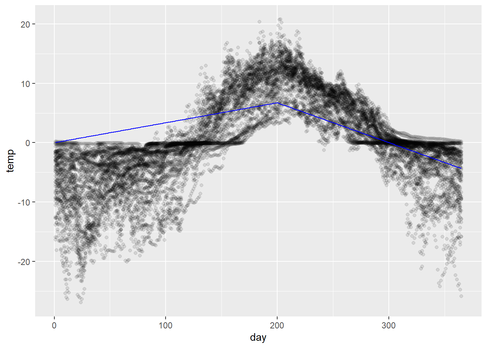
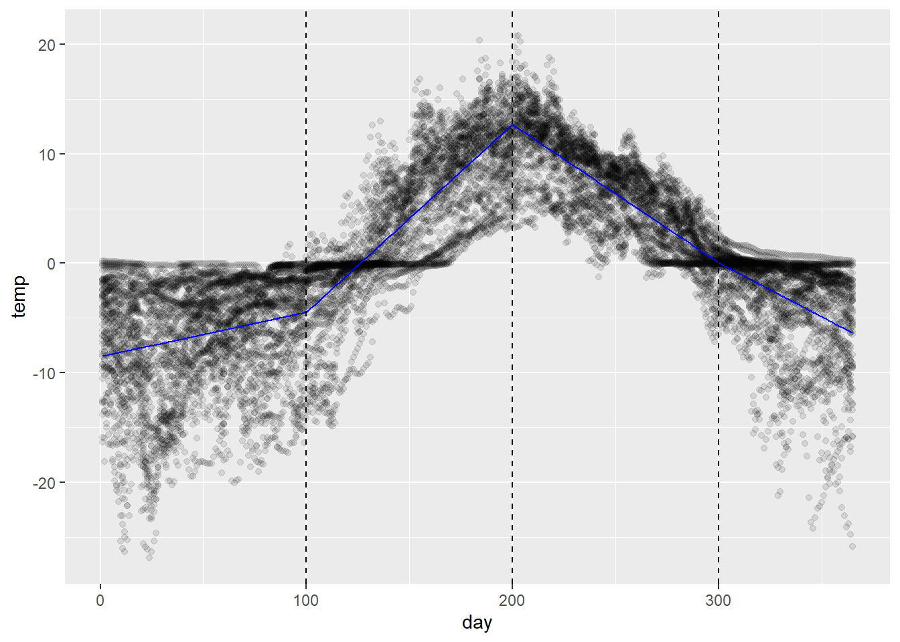
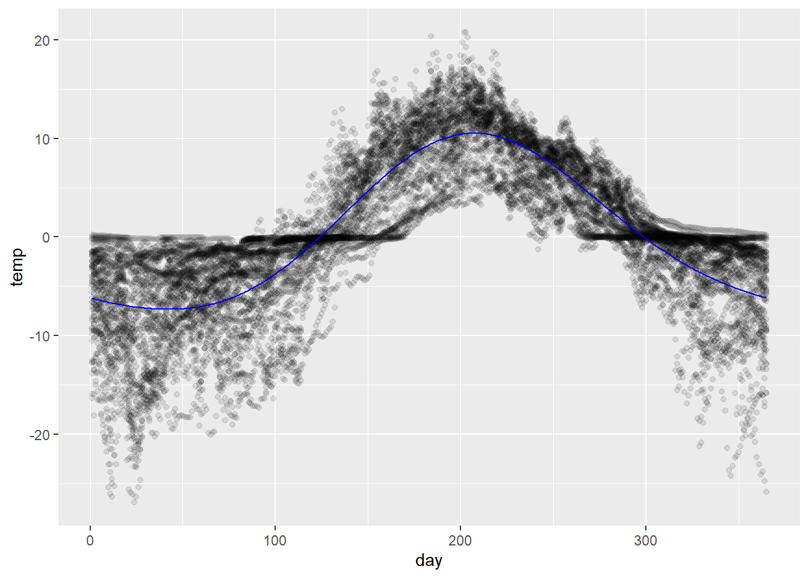

replicate the estimation of seasonal trend in the soil data as shown in class;
explore curve-fitting methods in greater depth.
Action
Setup: open RStudio, create a new script for this lab, and copy-paste the code chunk below into the first several lines of the script. Execute once to load and preview the data.
Our overall objective is to model temp as a function of day. As discussed in class, this amounts to estimating an unknown function \(f(\text{day})\) in the model:
(Here we’re using \(i\) to index observations and not sites – so we will use 16,799 observations to estimate \(f\). Note that there are only 57 unique sites.)
Although visually it makes more sense to plot paths by site, since we’re pooling all the observations together to estimate \(f\) we’re essentially treating the data as a collection of unrelated points. We’ll make use of the following visualization throughout to underscore this point.
# scatterplot of temperatures against day of yeartemp_pts <- soil %>%ggplot(aes(x = day, y = temp)) +geom_point(alpha =0.1)temp_pts

LOESS curves
It’s worth being aware that ggplot has a built-in ability to compute local nonparametric conditional mean estimates using LOESS (LOcally Estimated Scatterplot Smoothing). This can often be a quick-and-dirty strategy for visualizing trends; it is less often (but sometimes!) used as a model for prediction and the like.
This technique consists in computing a weighted average temp for every value of day that up-weights nearby points.
The span parameter controls the size of the neighborhood that contributes meaningfully to the weighted average – a smaller span, and thus a smaller neighborhood, produces a more erratic curve.
Action
Try changing the smoothing span. Note that the units for span are standard deviations, e.g., span = 1 says adjust the smoothing neighborhood in proportion to \(\pm 1 \text{SD}\) .
Pick a larger value.
Pick a smaller value.
Find a value that you think captures the trend best.
The LOESS curve is fully nonparametric, meaning no assumptions are made about the form of \(f\).
This is an advantage in some senses – it’s a model-free method – but a disadvantage in others – it doesn’t provide any meaningful data reduction since the curve is just a bunch of averages.
Polynomial regression
If we want an estimate that does yield some data reduction, a straightforward approach might be to fit a polynomial in day .
This can also be done through ggplot using a regression smooth (geom_smooth(..., method = 'lm', ...)). The following superimposes a quadratic fit (order 2 polynomial) to the data:
As an aside, poly is a handy R function that will compute polynomial terms in is argument, as illustrated below. (The argument raw = T ensures that ‘raw’ polynomials are returned rather than orthogonal polynomials. Orthogonal polynomials are the Gram-Schmidt orthognalization of the matrix of raw polynomials.)
This could be fit explicitly as a regression model:
# fit a polynomial modelfit_poly <-lm(temp ~poly(day, degree =2, raw = T),data = soil)# compute predictionspred_df <-tibble(day =1:365) %>%add_predictions(fit_poly)# visualizetemp_pts +geom_path(data = pred_df, aes(y = pred),color ='blue')
Action
Experiment with the polynomial degree and fit a model that you think best approximates the curve.
Suggestion: see what happens if you overfit by choosing a polynomial of unrealistically large order, e.g., a polynomial of degree 25.
Spline regression
Spline regression refers to fitting piecewise models constrained to join together at the “knot” points that divide the pieces.
This can be accomplished by some creative manipulation of the model formula with indicator variables. An example is shown below of a linear spline with one knot at day 200. It’s not so important that you understand the formula manipulation as much as the idea.
# linear spline with a knot at day 200fit_spline <-lm(temp ~ day +I((day -200)*(day >200)) -1,data = soil)# compute predictionspred_df <-tibble(day =1:365) %>%add_predictions(fit_spline)# plot ittemp_pts +geom_path(data = pred_df, aes(y = pred),color ='blue')

The formulae would get a little more complicated, but the principle would be the same for (a) introducing additional knots and/or (b) fitting polynomials to each segment.
Spline basis (a.k.a. “b-spline”)
A better solution than working out the formula each time is to use a basis expansion for the set of all possible regression splines of a given order.
This is what we discussed in class, and is illustrated in the code chunk below. The bs() function works similarly to poly() in the sense that it returns a matrix of values of the basis functions (cf. polynomial functions) for each value of an input vector.
# define knot pointsknotpts <-c(100, 200, 300)# fit an order 3 regression spline with three internal knotsfit_bs <-lm(temp ~bs(day, degree =1, knots = knotpts),data = soil) # compute predictionspred_df <-tibble(day =1:365) %>%add_predictions(fit_bs)# plot ittemp_pts +geom_path(data = pred_df, aes(y = pred),color ='blue') +geom_vline(xintercept = knotpts, linetype ='dashed')

Action
Experiment with the polynomial order and the placement of knot points.
Find a fitted curve that you feel captures the pattern well.
Compare with your neighbor. What did you choose similarly? What did you choose differently?
For the curious: you can also inspect the basis functions used to generate the regression spline and their dependence on the knot placement using the code chunk below.
Lastly, it was noted in class that spline regression does not produce a harmonic function and so is not well-suited to approximating a cyclical trend. Using a Fourier basis solves this problem.
The Fourier basis functions (expressed as real-valued functions) are the sequence of sine and cosine pairs characterized by
where \(k\) is a scaling factor. The first basis function is a constant \(\phi_1 (x) = c\).
This basis can be used to approximate any continuous function. One need only choose a number of pairs to employ; by default, the initial wavelength \(\lambda\) is set to the span of the data.
A nice consequence for us in the current context is that the resulting estimate, as a linear combination of harmonic functions, is itself harmonic.
# fit the model with the fourier basis expansionfit_fbs <-lm(temp ~fourier(day, nbasis =4, period =365) -1,data = soil)# compute predictionspred_df <-tibble(day =1:365) %>%add_predictions(fit_fbs)# plot ittemp_pts +geom_path(data = pred_df, aes(y = pred),color ='blue')

The model is fit without an intercept (temp ~ ... - 1 ) because fourier(...) returns a constant term.
Notice also that there is no need to specify knots in this case. The Fourier basis is generated using the period specified – each additional pair of sine and cosine basis functions simply halves the frequency of the previous pair.
Action
Experiment with the number of bases (note nbasis must be an even number).
Using a single pair of basis functions, plot estimates of the mean temperature over a period of 2 years. What happens when the input variable is outside the interval [1, 365]?
Make a time course plot of the temperature data with the estimated mean from the fit using the Fourier basis expansion overlaid.